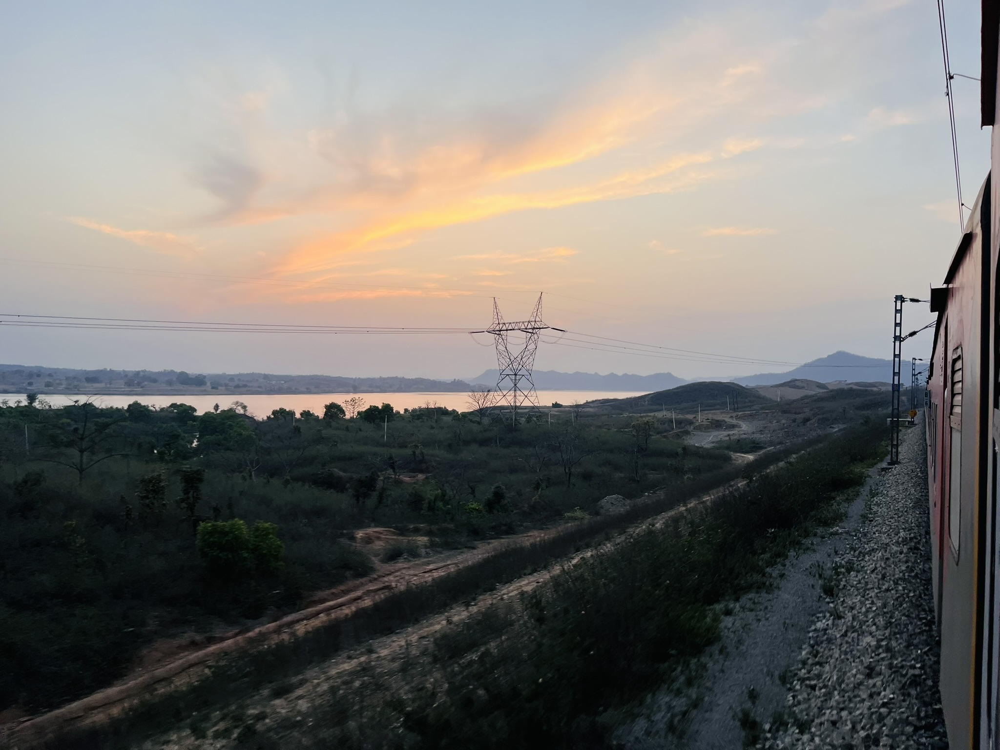

Journey Report11632 Dhanbad–Bhopal Express (2A): A Journey Through India's Industrial Heartland
Discover one of India's most fascinating railway corridors through coalfields, forests, thermal power stations and busy freight routes across central India.
🚆 SRC WAP-7
🏭 Industrial Corridor
🔄 Chopan Reversal
Read Full Journey